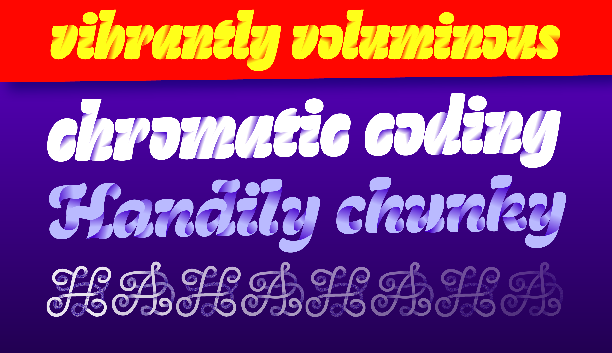
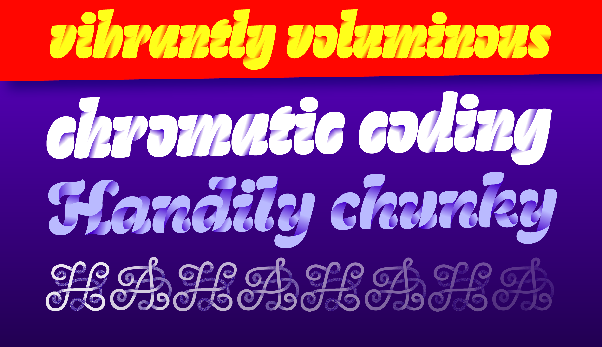

Tinta
Tinta is a colorful type family experimenting with gradients. Initially inspired by riso printing, the typeface originates from a love for color, handicrafts and coding. Tinta explores the possibilities of how gradients and letters can work together, while tackling the newest font technology. The result is a distinctive and vibrant font family. Tinta consists of three unique display styles and two accompanying text styles for smaller usage.
Marte Verhaegen
After a master's in Graphic Design in Ghent, Belgium, Marte found herself falling for the rabbit hole called type design. She graduated TypeMedia with a project around color fonts, feeding her interest in both coding and printing, and continued her education through internships with Just van Rossum and BlackFoundry in Paris. She is currently working as a freelancer.
Overview
 

Process
Tinta originated first and foremost out of a love for riso printing, with the flashy colors and the mesmerizing patterns. The idea started from making a typeface especially for this printer, with incorporating one of the nicest features it has: gradients. During the process some extra parameters were set up; most importantly that the gradients should be an inseparable part of the letters. Without gradients, no letters. The color was not going to be some added sprinkles on top. Inspiration came from all sorts of corners, stone carving, chocolate letters, Anya's dreams... A big part of the process was exploring, exploring, exploring. What can you do with gradients and letters? How can you combine them in a single, working unit?